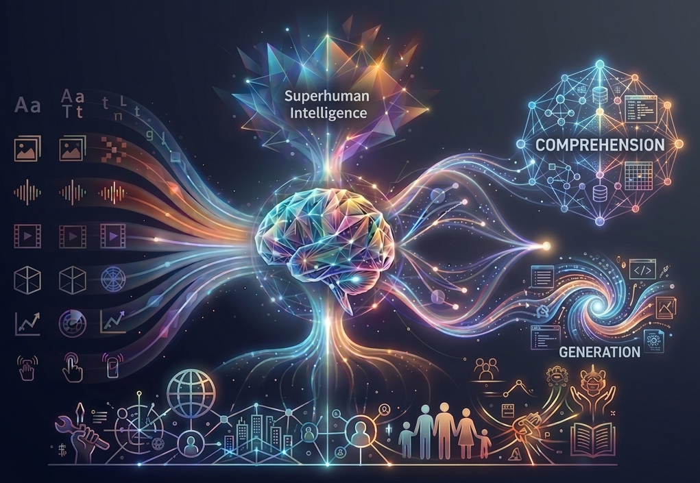
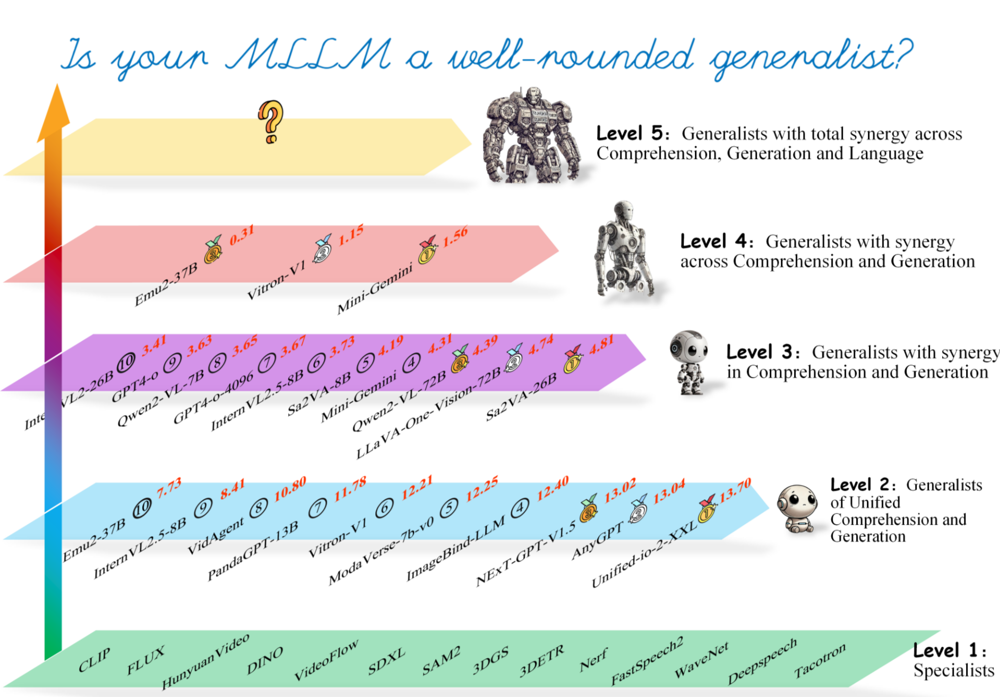
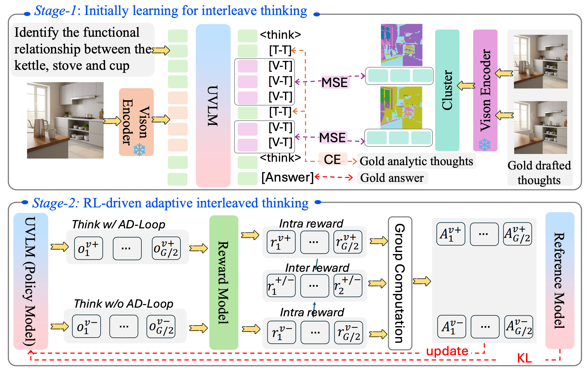

01
Beyond language-only intelligence
Future AI should natively operate over text, images, video, audio, 3D, and embodied signals rather than treating language as the only privileged interface.
Future human-level or superhuman AI will be multimodal generalist that can perceive, reason, and create across modalities while preserving deep synergy between modalities, tasks, paradigms.
01
Future AI should natively operate over text, images, video, audio, 3D, and embodied signals rather than treating language as the only privileged interface.
02
The target is the unification of modality, task, and paradigm, spanning both comprehension and generation.
03
A real multimodal generalist should exhibit generalization across modalities, across tasks, and across paradigms, rather than hosting isolated skills side by side.

Flagship Research
A principled evaluation framework for measuring how far current multimodal large language models have progressed towards genuine multimodal generalists.

A unified reasoning paradigm where understanding and generation alternate inside one problem-solving loop instead of remaining parallel but disconnected capabilities.

Workshop
MUCG focuses on closing the gap between multimodal comprehension and generation inside unified MLLM frameworks rather than treating them as independent capabilities.
Focus for papers
The special issue frames MUCG as a closed-loop paradigm where perceptual grounding, internal reasoning, and generative outputs must remain aligned across heterogeneous modalities.
Key scopes
Tutorial
The first tutorial series for the MLLM community, charting the evolution from multimodal large language models to human-level AI, with different editions focusing on benchmarks, architecture, reasoning, hallucination, efficiency, and broader open problems.